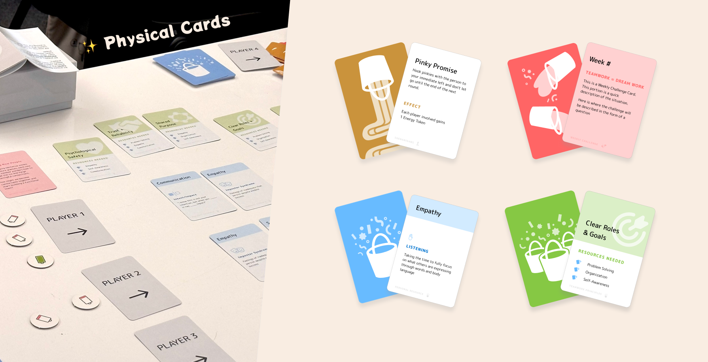

Role
Product Designer & Researcher
Owned the rule system, gameplay mechanics, prototype iteration, and learning experience.
This project is less about making cards look nice and more about designing a playable rule system: turn structure, rewards, collaboration loops, and feedback.
Product Designer & Researcher
Owned the rule system, gameplay mechanics, prototype iteration, and learning experience.
Educational board game
A physical card-based system translating collaboration theory into interactive learning.
60+ users tested
Iterative testing helped validate and refine the game system.

Playful Habit is an educational card game that turns teamwork theory into an interactive learning experience. The design problem was to make abstract collaboration concepts concrete enough to play, discuss, and improve through repeated rounds.
Mechanism challenge
How can a tabletop game teach collaboration skills through rules and interactions instead of explanation alone?
I treated each card and action as part of a system: what concept the player should practice, what feedback they receive, and how a mechanic can make teamwork visible without turning the experience into a lecture.
I converted teamwork concepts into turn structure, player decisions, card prompts, and feedback moments.
Through 60+ user tests, I iterated the rules and content to improve clarity, pacing, and engagement.
The game needed enough structure to teach, but enough openness for players to negotiate, reflect, and build shared meaning.
I used approachable visual language to make the system feel friendly, but the primary design value is in the mechanics: how rules guide behavior, reduce ambiguity, and create moments of feedback.
Turn teamwork principles into concrete prompts players can discuss and act on.
Create choices that ask players to coordinate, prioritize, respond, and reflect.
Make collaboration visible through progress cues, consequences, and end-of-round discussion.
This is a concise case study because the public artifact is limited. In a portfolio review, I would use this page to discuss mechanism design, rule tradeoffs, and what I learned from iterative testing with 60+ users.
Designing a game forced every interaction choice to answer a behavioral question: what should the player understand, feel, and do next? That mindset transfers directly into product design, especially onboarding, motivation loops, and collaborative workflows.
Good rules make learning active. They guide the next action while leaving enough agency for discussion and play.
I would compare different rule variants to see which mechanics best support collaboration, retention, and post-game reflection.